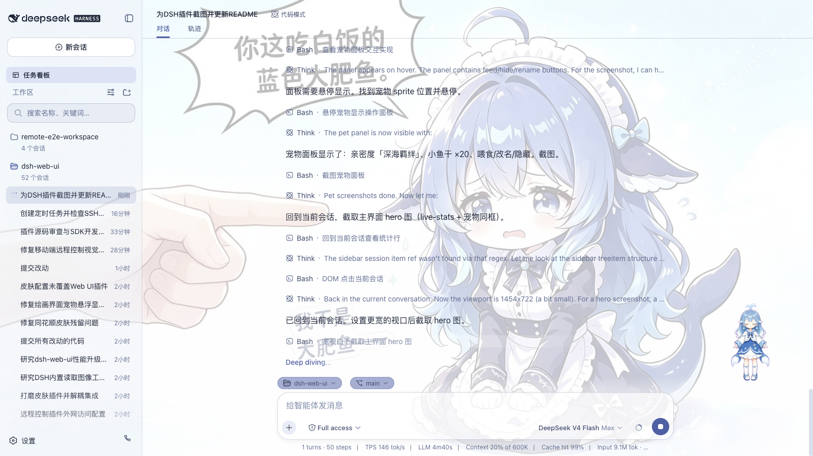
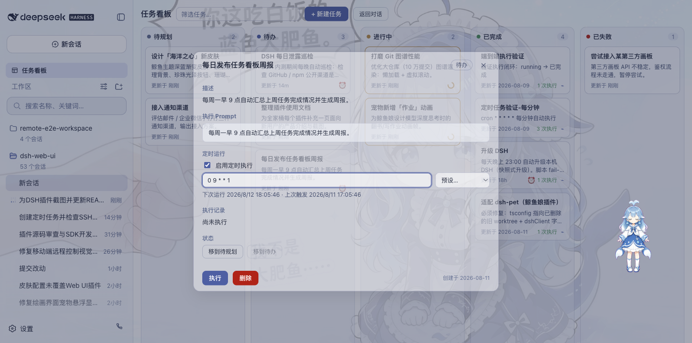
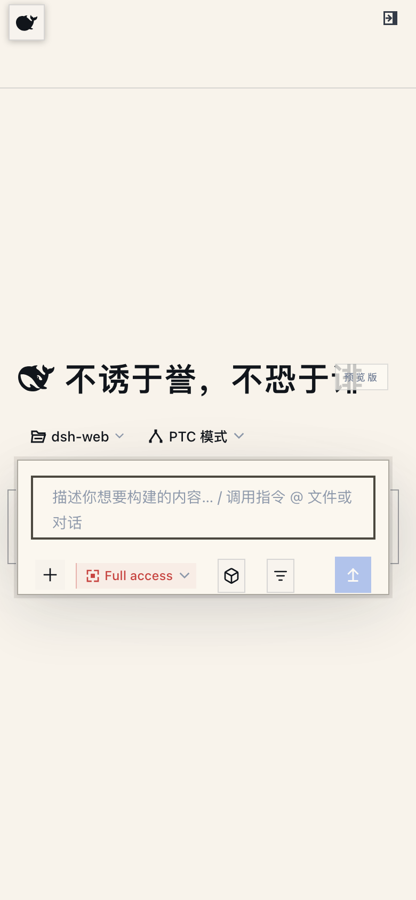
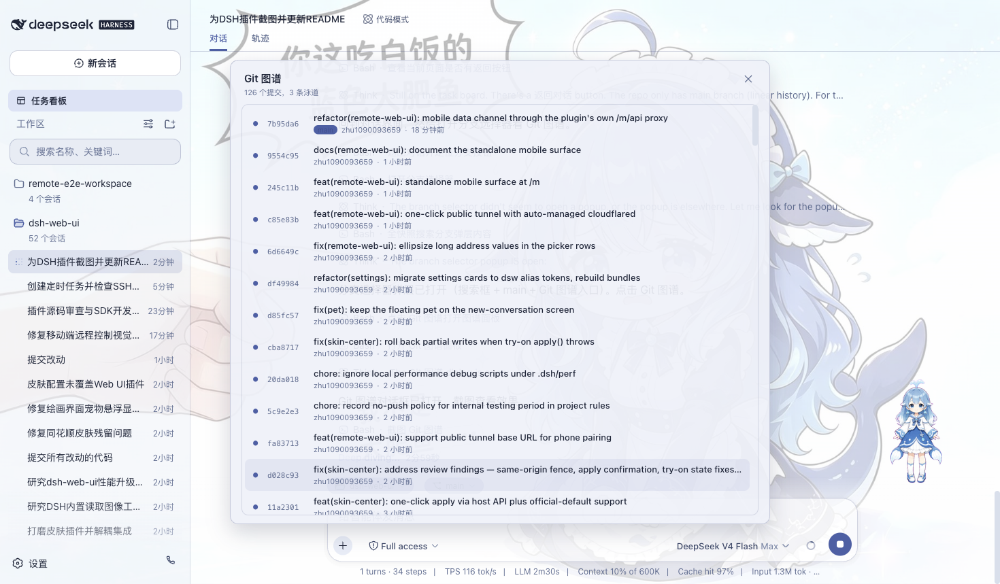
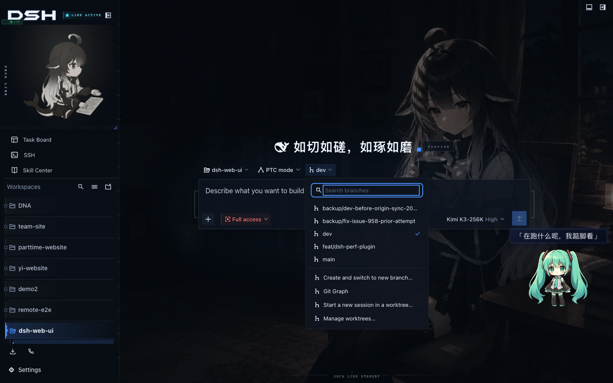
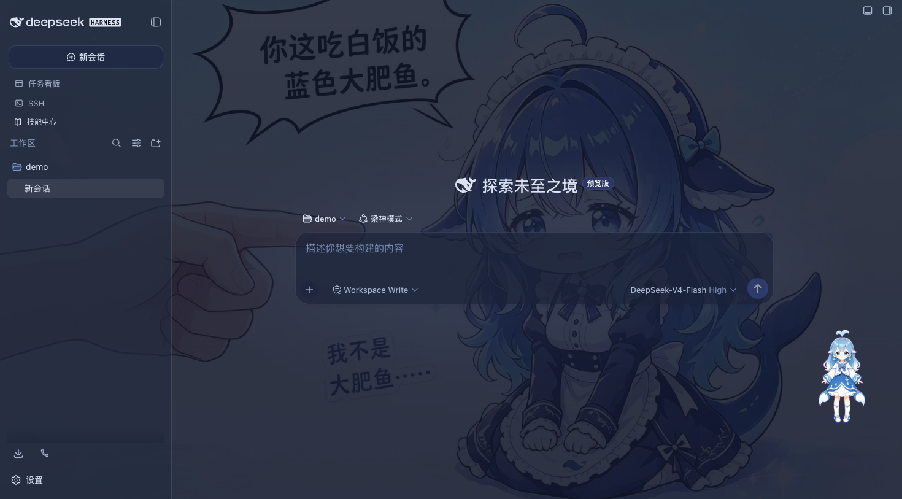
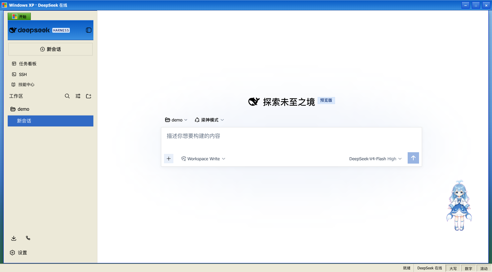
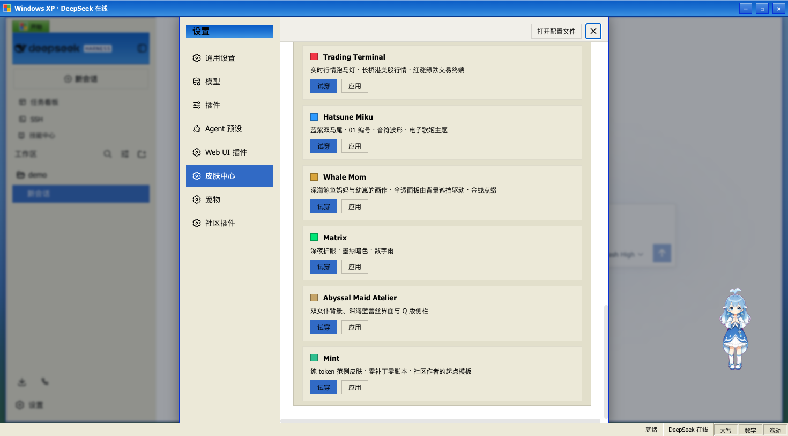

前八篇拆的都是单功能插件：上下文仪表盘、思维路由、agent 团队、侧边栏工作台、浏览器桥、两个视觉插件、记忆库。这一篇不一样——dsh-web（zhu1090093659，6.8k star）是一个聚合生态包，20 个包一次装齐，直接把 dsh 的 Web 界面变成完整的开发工作台。还是先对号入座。
场景一：活儿派出去就没了下文。 你让 agent 干三四件事，它埋头干活，你记不清哪件在跑、哪件完了、哪件卡住了——切回去逐个会话翻，比派活本身还费时间。任务看板把活儿按五列摆开——待规划、待办、进行中、已完成、已失败，点卡片上的「执行」，任务交给真实的 DSH 会话去跑，跑完状态自动回写；还能配 cron 定时，每天 23:00 自动升级 DSH、每周一 09:00 出周报，关掉浏览器照跑到点执行。
场景二：改完代码要上服务器。 重启服务、翻日志、传文件，你得开一堆终端窗口切来切去。SSH 面板就在侧边栏里：xterm.js 终端实时输出、SFTP 传输带进度条、端口隧道直连远程数据库和管理后台（只监听 127.0.0.1）、一条命令按别名/环境/标签过滤并发跑多台主机的集群执行。
场景三：出门想盯进度。 出门吃饭的空档想看看跑到哪了。扫个码，手机上运行的就是完整 Web GUI 本身——看会话、开新会话、切模型、调权限预设，和桌面同一份状态；SSE 实时推送，不支持 SSE 的网络自动降级轮询（消息晚几秒但收发正常）；同一份配对链接也能配对 PC 浏览器，另一台电脑打开完整 Web GUI，流量走配对门控通道。
场景四：并行任务互相踩。 两个会话改同一个仓库，一个改完另一个的编辑器里全是红色——工作区打架，合并的时候更是一场灾难。Git 图谱旁边就有 worktree 并行会话：每个新会话落进独立隔离检出，主检出全程不动。
产品排期、后端运维、前端协作、远程盯盘——这一篇把它们一次装齐。还是系列固定四段：接入、使用、截图切图看功能、源码简单分析大概实现。
● ● ●
一、接入：一条命令，全家桶
dsh plugin --profile dw09 add @linxin666/dsh-web-all@latest
# 206 个包，7m00s（ssh2/node-pty 原生编译占大头）
我这次实录踩了一个 README 预告过的坑：pnpm 拒绝依赖的构建脚本（ERR_PNPM_IGNORED_BUILDS，cloudflared、cpu-features、node-pty、ssh2 四个）。处理是固定的三步——profile 的 pnpm-workspace.yaml 里 allowBuilds 把这四个置 true，重跑安装命令，等编译完。二装就不需要了。不想装全家桶也行，每个子包在 npm 单独发布，dsh plugin --profile web add @linxin666/dsh-ssh@latest 这样按需单装，不拖家带口。
验证挂载用官方给的命令：
dsh --profile dw09 --dump-config
# 29 条 web-ui-* 插件行：task-board / ssh / git-graph /
# remote-web-ui / describe-image / liangshen / doctor /
# session-archive / skin-center / better-sidebar / perf / market ...
bundle 层干干净净两行：官方 base 加聚合包本身，插件行全部由聚合包展开，卸载也只卸一个包，不留残渣。注意其中一行 better-sidebar：上一篇 EP04 拆过的侧边栏工作台不是竞品，已经被拼进全家桶默认启用——聚合包会收纳外部插件，装一个 dsh-web-all 等于 EP04 白送。重启 dsh web，侧边栏出现全部入口就是生效。
● ● ●
二、使用：四块能力各管一段
任务看板管产品排期。 五列看板之外的关键设计是"任务=真实会话"：点执行不是跑个假进度条，是开真实 DSH 会话干完再回写状态，想复盘就跳回执行会话看完整过程。每个任务有独立详情页：cron 表达式（每天 23:00 自动升级 DSH、每周一 09:00 生成周报）、执行历史都在里面配和看，关掉浏览器照跑到点执行和结算；cron 任务还支持空闲睡眠保护——屏幕可以熄，机器不许睡。
SSH 面板管后端运维。 主机支持密钥/密码认证，能从 ~/.ssh/config 一键导入，配置落在 ~/.dsh/dsh-ssh.json；端口隧道直连远程数据库和管理后台时只监听 127.0.0.1，外网摸不到。最有意思的是 Agent 直连：agent 和面板共用同一份主机配置，对话里说一句"连一下 xxx 看看状态"，智能体就直接执行远程命令——运维操作从"你切窗口"变成"你说话"。
Git 图谱管前端协作。 输入框上方的分支选择器切分支、翻泳道式提交历史；「在 worktree 中开始新会话」在 $DSH_HOME/worktrees/ 下建隔离检出并注册为工作区。设置里还有个默认关闭的「自动隔离」：git 工作区的每个新会话自动落进独立 worktree，从机制上消灭互踩；「管理 worktree」面板列出全部托管检出，有未提交改动先拦一次再允许强制删除。
图像理解补视觉。 桶里还带一个 describe_image 视觉工具（dsh-tool-describe-image）：对话里出现图片路径或附件，它把图发给配置好的视觉端点（Qwen-VL、GLM-4V、GPT-4o、本地 Ollama 都行），回答以文本进会话，图片本身不进会话记录。和 EP06 modlens 的自动召回路线不同，它是按需调用的工具——不改变模型变体，纯文本输入框加个图片按钮就完事。
会话归档管家底。 用久了会话堆积是常态，内置的归档管理把活跃/已归档/空白/子代理会话集中陈列，批量归档、批量恢复、物理删除（级联语义，删前显示预计释放空间，运行中会话永远受保护）。
移动端远程管盯盘。 扫码配对后手机跑的是官方 Web GUI 本身（自动注入触控适配层：鲸鱼按钮展开侧边栏、左滑收起右滑展开、长按会话行出操作菜单、16px 输入框防聚焦缩放），桌面工具面（SSH、看板、Git 图谱）在手机上自动隐藏——看的是同一份会话状态，不是裁剪版。安全模型也在线：配对令牌一次性、限时，「停止」随时吊销；未配对设备只有横幅提示，拿不到任何数据。
梁神模式管模型发挥。 这是个随桶附带的 agent 预设（dsh-liangshen），思路是两阶段锚定：首轮只给模型 Minimal 的精确双工具（持久 bash + 编辑器）加一行 persona，等首次工具调用后、首个 minimal-like 推理块出现，再切换到完整工具注册表并恢复全部上下文注入。为什么绕这一圈？社区评测里 Minimal 轨迹的分数反而比 Standard 高（99/96 对 91/92）——首轮轨迹干净，后续能力一点不少，Windows 原生实测均值 98.5。阶段从持久化 session events 推导，resume 不丢状态。
性能引擎和救助模式管稳。 性能引擎（dsh-perf）在右下角开 HUD 面板：每个会话的事件速率、事件循环 p99 延迟、FPS、内存实时可见，活跃会话超阈值亮警；治理侧做写批调谐和渲染降载——开窗时代码高亮尖峰就是这么消掉的。救助模式（dsh-doctor）默认开启：启动失败、进程崩溃、浏览器白屏都被后台守护捕获，每次修复走事务——先快照 profile，改完过健康门禁再原子提升，失败按字节回滚，profile 永远不会修成砖。
● ● ●
三、截图切图看功能：一个功能一张图
先回答"在原来 web 上多了什么"——这是官方 README 里那张总账表，也是全家桶的增量清单：
| 能力 | 原生 dsh web | dsh-web 全家桶 |
|---|---|---|
| 性能观测与治理 | 无 | HUD 面板 + 事件循环 p99/内存指标 + 写批频控 + 渲染降载 |
| 任务看板 | 无 | 多列看板 + cron 定时真实执行 |
| 移动端远程 | 无 | 扫码配对、SSE 实时同步，同链接可配对 PC |
| 远程服务器运维 | 无 | SSH 面板：终端 / 传输 / 隧道 / 集群 |
| 图像理解 | 无 | describe_image 视觉工具 |
| 文件预览与变更 | 无 | 右侧面板：资源管理器 / 编辑器 / 终端 / Git / 浏览器 |
| Git 可视化 | 无 | 分支选择器 + 提交历史图谱 + worktree 并行会话 |
| Agent 预设 | 官方预设 | 增加梁神模式等社区预设 |
| 主题皮肤 | 默认主题 | 皮肤插件 + 创意工坊按需安装 |
装完全家桶的主界面，侧边栏多出一排插件入口：

图：dsh-web 全家桶主界面（官方仓库截图）
图：dsh-web 全家桶主界面（官方仓库截图）
下面每个功能配一张官方截图。
任务看板——五列摆开，点执行交给真实会话：

图：任务看板五列，点执行交给真实 DSH 会话（官方仓库截图）
图：任务看板五列，点执行交给真实 DSH 会话（官方仓库截图）
cron 定时——配置在任务详情页里：

图：任务详情配 cron 表达式，到点自动执行结算（官方仓库截图）
图：任务详情配 cron 表达式，到点自动执行结算（官方仓库截图）
移动端——鲸鱼入口进会话列表，聊天界面和桌面同构：

图：移动端主页鲸鱼入口（官方仓库截图）
图：移动端主页鲸鱼入口（官方仓库截图）
Git 图谱——分支泳道 + 提交历史：

图：分支泳道提交历史（官方仓库截图）
图：分支泳道提交历史（官方仓库截图）
worktree 并行会话——每个会话独立检出：

图：在 worktree 中开始新会话（官方仓库截图）
图：在 worktree 中开始新会话（官方仓库截图）
右侧面板——EP04 的 better-sidebar，拼入即用：

图：右侧面板资源管理器/编辑器/终端/Git/浏览器（官方仓库截图）
图：右侧面板资源管理器/编辑器/终端/Git/浏览器（官方仓库截图）
主题皮肤——这是大家问得最多的。内置的默认皮肤是 Blue Fantasy 蓝色幻想：鲸鱼插画垫在半透明面板下，靛蓝色调贯穿全局：

图：内置 Blue Fantasy 皮肤暗色（官方仓库截图）
图：内置 Blue Fantasy 皮肤暗色（官方仓库截图）
更多主题在创意工坊按点赞热度排序安装，比如 XP 怀复刻、鲸歌 Whale Song、港湾 Harbor 这些：

图：创意工坊 XP 皮肤（官方仓库截图）
图：创意工坊 XP 皮肤（官方仓库截图）
创意工坊——皮肤/宠物/插件的一站式分发站（dsh-market.com），试穿预览、一键复制安装命令：
图：创意工坊首页（官方仓库截图）
图：创意工坊首页（官方仓库截图）
开关在设置里——「设置 > 插件配置」每张卡对应一个子插件：

图：设置里的皮肤中心与插件配置卡（官方仓库截图）
图：设置里的皮肤中心与插件配置卡（官方仓库截图）
主题能不能关、插件能不能停？能，而且分三层：皮肤层，皮肤是纯资产包，皮肤中心里切换即生效、删目录即卸载，不想用任何皮肤就停掉皮肤插件回到默认主题；插件层，设置 → 插件配置里每张卡对应一个子插件，宠物、皮肤、性能引擎都能单独停；预设层，梁神模式只是预设选择器里的一个选项，不选就是官方 Standard，零负担。救助模式 doctor 默认开启，不想要在 Doctor 卡片里关。唯一要记住的是 better-sidebar 是聚合包拼入的，想撤掉右侧面板等于卸整个聚合包或单独 remove 那一行。
SSH 面板、性能引擎 HUD、救助模式、会话归档这四个功能仓库里没有配官方截图，装好后都在侧边栏和设置卡里，装一遍就都见得到。
● ● ●
四、源码简单分析：聚合包怎么把 20 个包装成一个
仓库是 20 个包的 pnpm monorepo，但你在 npm 上只装 @linxin666/dsh-web-all 一个聚合包。它的 package.json 里声明 dsh.bundle（装配清单），装进 profile 时一次性展开成 29 条 web-ui-* 插件行——每行一个独立插件，可插拔：不想要宠物就在设置里关掉，web-ui-pet 那行单独卸载也不影响其他。
三个值得展开的机制。
皮肤是资产包不是插件。 v2 皮肤体系里，皮肤插件是唯一加载器，皮肤本身只是 skin.json 清单 + 样式/贴图/特效脚本 的纯资产目录，从创意工坊按需落目录即生效——官方升级不再牵动皮肤，新增皮肤无需发布安装。
外部插件能拼进全家桶。 better-sidebar 是别人的插件，聚合包把它声明进装配清单默认启用——生态不是孤岛，聚合包在做"全家桶发行版"。这个思路反过来也成立：你只需要某个功能时，每个子包在 npm 都单独发布（@linxin666/dsh-ssh、@linxin666/dsh-client-ui-task-board 等），单装不拖家带口。
两个安全设计点到为止。 图像理解的 describe_image 把图发给外部视觉端点，但进会话的只有返回文本，图片本身不进会话记录；移动端配对走一次性限时令牌 + /remote/api 门控通道，SSH 隧道只监听 127.0.0.1。
● ● ●
五、和 EP04 对着看：底座与全家桶
EP04 拆过 better-sidebar（3.1k star），这一篇又全程在说全家桶——两者什么关系，一张表说清：
| 能力 | EP04 better-sidebar（底座） | EP09 dsh-web（全家桶） |
|---|---|---|
| 定位 | 侧边栏工作台底座，给"你"的界面 | Web 端完整开发工作台，聚合 20 包 |
| 文件树/编辑器/预览器 | 内置 7 页面 + 6 预览器 | 同一套——直接拼入 EP04 本尊，钉 0.18.0 正式版 |
| 终端 | xterm.js + node-pty，固定终端/自由窗口 | 同左；另加 SSH 远程终端管服务器 |
| Git | 工作区 diff/暂存/提交（无 push/pull） | Git 图谱泳道 + 分支切换 + worktree 并行会话 |
| 任务管理 | 无 | 五列看板 + cron 定时 + 真实会话执行 |
| 远程能力 | 无 | 移动端/PC 扫码配对 + SSH 面板 |
| Agent 侧 | 不注册 agent 工具，纯界面 | describe_image、git_worktree、梁神预设、doctor |
| 安装形态 | 单插件，dump 加 1 行 | 聚合包展开 29 行，每个可插拔 |
看行的规律就明白：04 管的是"编辑器那一侧"，09 管的是"工作流那一层"。04 的强项（自由窗口、固定终端、侧边对话、第三方 registerTab 完全对等）在 09 里原样保留，因为那就是 04 本尊；09 的增量全部是 04 明确不做的方向——任务、远程、运维、Agent 工具。连 04 的已知限制都被接上了：04 的 Git 面板没有 push/pull，09 的 Git 图谱 + worktree 正好补了协作那一层。
装了 04 还要装 09 吗？ 实操建议：要。但先 dsh plugin --profile web remove dsh-better-sidebar 再装 09——两边的插件行 id 不同（better-sidebar 对 web-ui-better-sidebar），不冲突但功能重复，会出现两份侧边栏来源；remove 掉独立 04 再装 09，能力一点不少，还顺便升级到 0.18.0 正式版。反过来，只要工作台不要全家桶的，留 04 就够——它 325KB 起步、按需加载，安静得多。
● ● ●
小结
dsh-web 干的事一句话说完：把"一切皆插件"在 Web 端做到头——20 个包、一次装齐、每个都可插拔。对个人开发者它是全流程工作台：看板管排期、SSH 管运维、worktree 管并行、移动端管远程；对生态它示范了聚合包形态——单个插件是手指，聚合包是手掌，外部插件还能拼进来做"全家桶发行版"。1000★ 门槛之下它是 Web 端最能打的一个：6.8k star、20 个包、周更节奏，桌面工具面在手机上自动隐藏这类细节也做足了。和已发的 EP04（better-sidebar 已拼入）不冲突，装这一个等于把工作台补完整。
下一篇从候选池里按 1000★ 门槛往下走：OpenBiliClaw 的 DSH 插件（3,190★，内容发现 + 22 个 Agent Bridge 工具）是目前最高的未发布项，到时拆。
源码地址：github.com/zhu1090093659/dsh-web（npm：@linxin666/dsh-web-all）